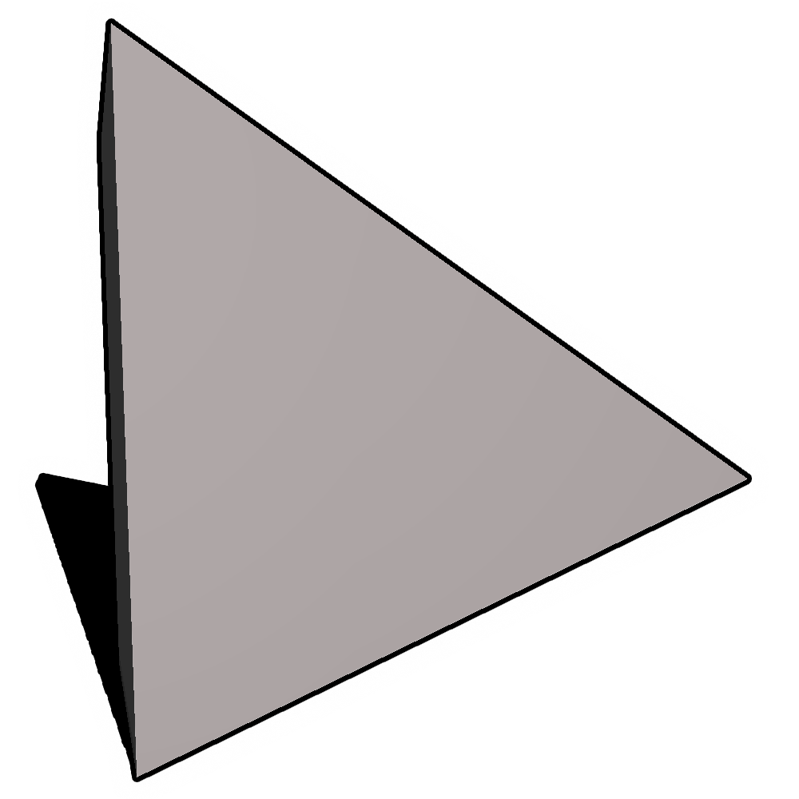
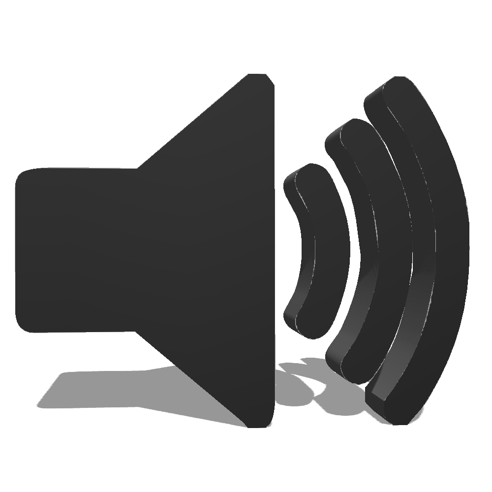

* pages will open in new tab to allow for continuous playing
Jerome FM
Residents
Shows
About
Get involved
Track / Show History
*times are in EST
View raw Google Sheet →
Prev ←
Next →
⟳
Loading…
Prev ←
Next →
⟳